Disciplina oferecida pelo PPGFAP-UFSC
Integração, manipulação e visualização de dados filogenéticos
Neste livro online se encontra um guia para integração, manipulação e visualização de dados filogenéticas através da filosofia tidyverse, usando os pacotes R: tidytree, treeio e ggtree.
Os exemplos e tutorias apresentado na disciplina serão convertidos e executados com base neste três pacotes.
-
Tutoriais/Tutorial filogenias no R-em português(Suzana)/Tutorial phylo R(SAlcantara).txt (as partes de uso básico do
Rnão serão apresentadas aqui)
para arquivos de texto, utilize o programa TextWrangler
de preferência, salve os dados originais (planilhas de excel) em formato .csv (sem fórmulas ou caracteres especiais, use . para casa decimais)
QUARTA LIÇÃO: aprender a manipular filogenias em R
comandos úteis: read.tree(), branching.times(), node.depth(), cophenetic.phylo(), vcv(), write.tree(), mrca(), multi2di(), rotate()
Plotar: plot.phylo() , add.scale.bar() , identify.phylo() , nodelabels() , subtreeplot() , which.edge() , zoom()
Usando os pacotes indicados nos tutoriais
library(ape)
library(geiger)
library(phytools)
#> Loading required package: maps
##ler árvore de uma linha (objeto criado: lista de classe phylo):
tt = "(((((((cow, pig),whale),(bat,(lemur,human))),(robin,iguana)),coelacanth),gold_fish),shark);"
vert.tree <- read.tree(text = tt)
#plotar em diferentes formatos:
plot(vert.tree)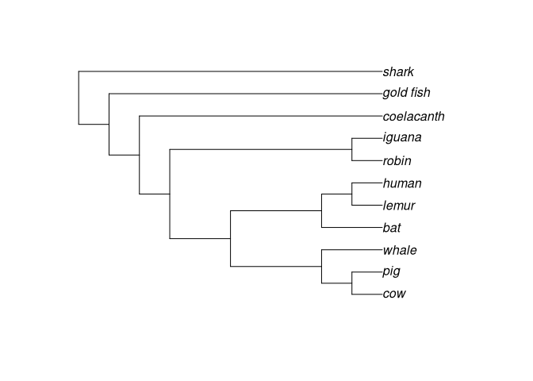
# Cladograma
plot(vert.tree,type="cladogram")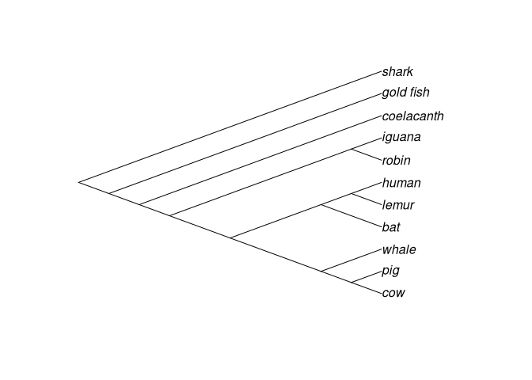
# Sem raiz
plot(unroot(vert.tree),type="unrooted")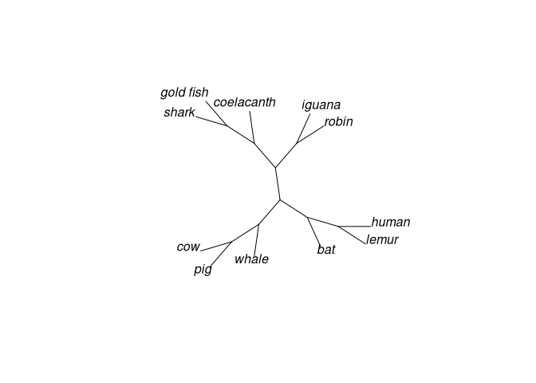
# Fan
plot(vert.tree,type="fan")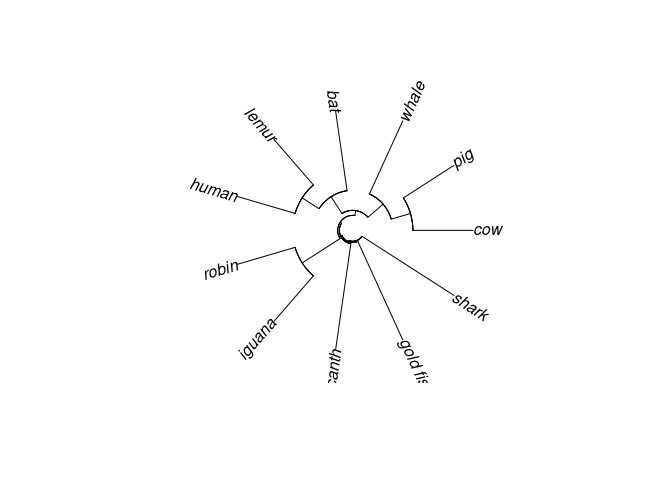
Usando os pacotes ‘tidy’ treeio e ggtree
# carregando o pacote 'treeio'
library(treeio)
#> Registered S3 method overwritten by 'treeio':
#> method from
#> root.phylo ape
#> treeio v1.12.0 For help: https://yulab-smu.github.io/treedata-book/
#>
#> If you use treeio in published research, please cite:
#>
#> LG Wang, TTY Lam, S Xu, Z Dai, L Zhou, T Feng, P Guo, CW Dunn, BR Jones, T Bradley, H Zhu, Y Guan, Y Jiang, G Yu. treeio: an R package for phylogenetic tree input and output with richly annotated and associated data. Molecular Biology and Evolution 2020, 37(2):599-603. doi: 10.1093/molbev/msz240
#>
#> Attaching package: 'treeio'
#> The following object is masked from 'package:phytools':
#>
#> read.newick
#> The following object is masked from 'package:geiger':
#>
#> treedata
#> The following object is masked from 'package:ape':
#>
#> drop.tip
tt1 <- "(((((((cow, pig),whale),(bat,(lemur,human))),(robin,iguana)),coelacanth),gold_fish),shark);"
vert_tree <- read.newick(text = tt1)
## carregando o pacote 'ggtree'
library(ggtree)
#> ggtree v2.2.4 For help: https://yulab-smu.github.io/treedata-book/
#>
#> If you use ggtree in published research, please cite the most appropriate paper(s):
#>
#> [36m-[39m Guangchuang Yu. Using ggtree to visualize data on tree-like structures. Current Protocols in Bioinformatics, 2020, 69:e96. doi:10.1002/cpbi.96
#> [36m-[39m Guangchuang Yu, Tommy Tsan-Yuk Lam, Huachen Zhu, Yi Guan. Two methods for mapping and visualizing associated data on phylogeny using ggtree. Molecular Biology and Evolution 2018, 35(12):3041-3043. doi:10.1093/molbev/msy194
#> [36m-[39m Guangchuang Yu, David Smith, Huachen Zhu, Yi Guan, Tommy Tsan-Yuk Lam. ggtree: an R package for visualization and annotation of phylogenetic trees with their covariates and other associated data. Methods in Ecology and Evolution 2017, 8(1):28-36. doi:10.1111/2041-210X.12628
#>
#> Attaching package: 'ggtree'
#> The following object is masked from 'package:ape':
#>
#> rotate
# Visualizar
ggtree(vert_tree) +
geom_tiplab(size=3, color="red")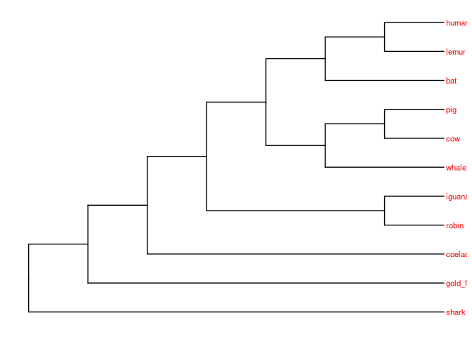
# O tipo de árvore é alterado pelo argumento 'layout'
# Circular
ggtree(vert_tree, layout="circular") +
geom_tiplab(size=3, color="purple")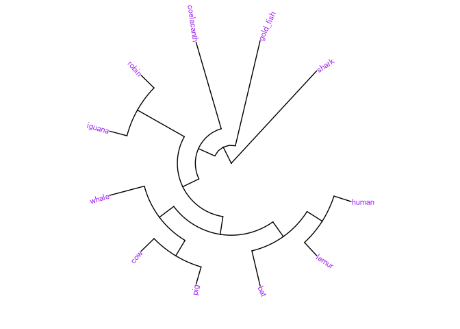
# Inclinada
ggtree(vert_tree, layout="slanted") +
geom_tiplab(size=3, color="blue")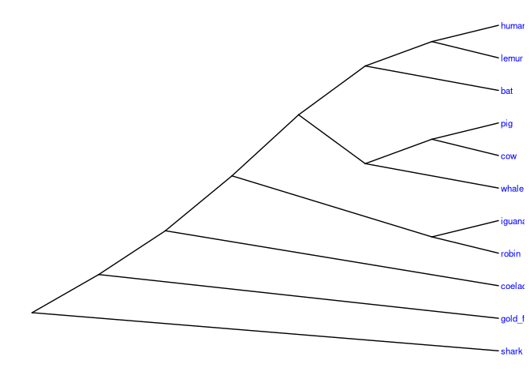
# Sem raiz
ggtree(vert_tree, layout="daylight") +
geom_tiplab(size=3, color="red")
#> Average angle change [1] 0.111110129900635
#> Average angle change [2] 0.0369310900693604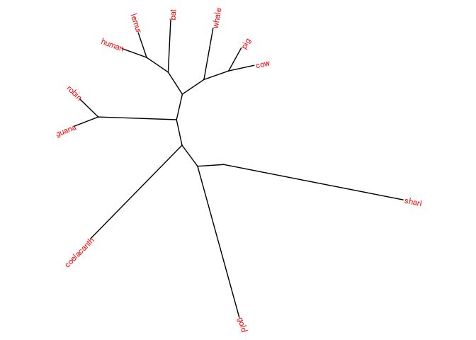
objeto de classe phylo tem 4 partes, normalmente “escondidas” (não aparecem quando digitamos o nome do objeto):
vert.tree
#>
#> Phylogenetic tree with 11 tips and 10 internal nodes.
#>
#> Tip labels:
#> cow, pig, whale, bat, lemur, human, ...
#>
#> Rooted; no branch lengths.Independentemente do pacote que o criou:
vert_tree
#>
#> Phylogenetic tree with 11 tips and 10 internal nodes.
#>
#> Tip labels:
#> cow, pig, whale, bat, lemur, human, ...
#>
#> Rooted; no branch lengths.
#para ver todas as partes:
str(vert.tree)
#> List of 3
#> $ edge : int [1:20, 1:2] 12 13 14 15 16 17 18 18 17 16 ...
#> $ Nnode : int 10
#> $ tip.label: chr [1:11] "cow" "pig" "whale" "bat" ...
#> - attr(*, "class")= chr "phylo"
#> - attr(*, "order")= chr "cladewise"
str(vert_tree)
#> List of 3
#> $ edge : int [1:20, 1:2] 12 13 14 15 16 17 18 18 17 16 ...
#> $ Nnode : int 10
#> $ tip.label: chr [1:11] "cow" "pig" "whale" "bat" ...
#> - attr(*, "class")= chr "phylo"
#> - attr(*, "order")= chr "cladewise"outro exemplo com os pacotes do tutorial:
tree1 <- read.tree(text = "(((A,B),(C,D)),E);")
plot(tree1, type = "cladogram", edge.width = 2)
mesmo exemplo com os pacotes ‘tidy’:
tree2 <- read.newick(text = "(((F,G),(H,I)),J);")
ggtree(tree2, branch.length='none') +
geom_tiplab(size=3, color="red")
objeto phylo com 3 componentes (=explicados a seguir) e uma classe de atributo (=phylo):
tree1$edge
#> [,1] [,2]
#> [1,] 6 7
#> [2,] 7 8
#> [3,] 8 1
#> [4,] 8 2
#> [5,] 7 9
#> [6,] 9 3
#> [7,] 9 4
#> [8,] 6 5A matrix edge contém o começo e o final do número do nó para todos os nós e terminais da filogenia.
Por convenção, os terminais da árvore são numerados de 1 ao longo do número n de terminais; e os nós são numerados n:- 1 ao longo do n + m para m nós. m = n - 1 para as árvores totalmente bifurcadas.
O vetor tip.label contém os labels (=identificações) para todos os terminais na árvore.
A ordem dos tip.label é a ordem dos terminais numerados de 1 a n no vetor edge.
tree1$tip.label
#> [1] "A" "B" "C" "D" "E"
tree2$tip.label
#> [1] "F" "G" "H" "I" "J"O numeral Nnode contém o número de nós internos da árvore, incluindo a raiz da árvore.
tree1$Nnode
#> [1] 4
tree2$Nnode
#> [1] 4para plotar todas as info:
plot(tree1,edge.width = 2,label.offset = 0.1, type = "cladogram")
nodelabels()
tiplabels()
para plotar todas as info com os pacotes ‘tidy’:
ggtree(tree2, branch.length='none') +
geom_text(aes(label = node), color = "blue", size = 3, hjust = -.3) +
geom_tiplab(size = 3, geom = "label", color="red", hjust = -.5)
“phylo” tb pode ter outros componentes, os mais comuns são edge.length (um vetor de classe numeric contendo todos os comprimentos dos ramos da árvore na mesma ordem em que as linhas no vetor edge; e root.edge, um valor numérico dando o comprimento do ramo da raiz, se enraizada.
Outros elementos e atributos podem ser adicionados para tipos especiais de árvores filogenéticas.
Escrevendo e lendo árvores filogenéticas:
write.tree(tree1, "example1.tre")
cat(readLines("example1.tre"))
#> (((A,B),(C,D)),E);utilizando phytools:
writeNexus(tree1,"example1.nex")
cat(readLines("example1.nex"),sep="\n")
#> #NEXUS
#> [R-package PHYTOOLS, Thu Oct 8 19:18:08 2020]
#>
#> BEGIN TAXA;
#> DIMENSIONS NTAX = 5;
#> TAXLABELS
#> A
#> B
#> C
#> D
#> E
#> ;
#> END;
#> BEGIN TREES;
#> TRANSLATE
#> 1 A,
#> 2 B,
#> 3 C,
#> 4 D,
#> 5 E
#> ;
#> TREE * UNTITLED = [&R] (((1,2),(3,4)),5);
#> END;Simulando, plotando, extraindo clados & cortando tips (terminais) das árvores:
(escolher o valor de seed para garantir repetibilidade)
set.seed(1)simular uma árvore com modelo birth-death utilizando phytools
tree <- pbtree(b = 1, d = 0.2, n = 40)critério de parada é 40 espécies viventes, neste caso:
plotTree(tree)
nodelabels()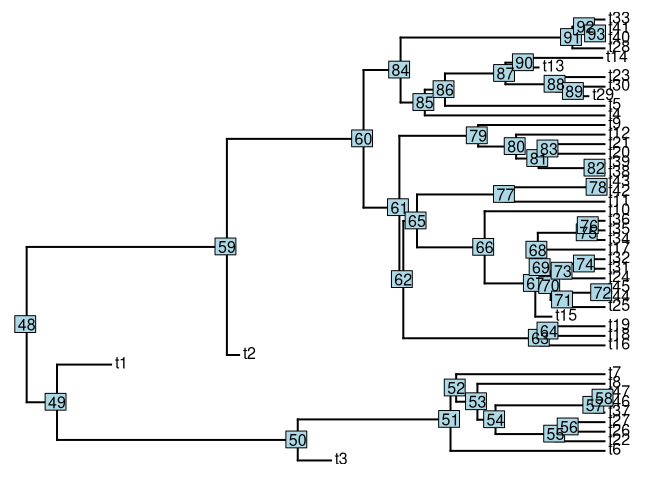
Utilizando os pacotes ‘tidy’
ggtree(tree) +
geom_nodelab(aes(label = node), colour = "blue", size = 2, hjust = .2) +
geom_tiplab(colour = "red", size = 3, hjust = -.3)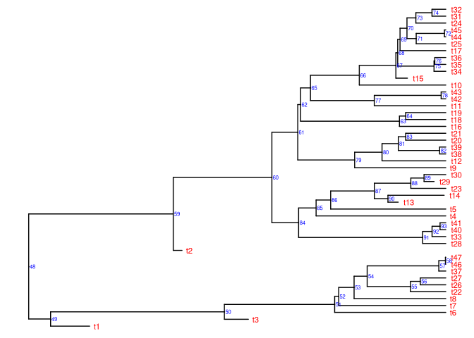
ok, agora extraia o clado descendente a partir do nó de número 62
tt62 <- extract.clade(tree, 62)
plotTree(tt62)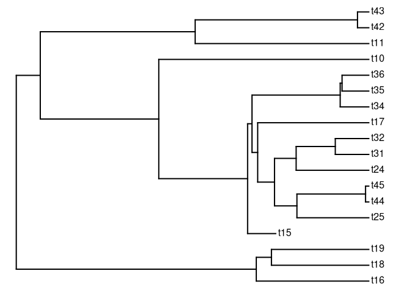
Utilizando os pacotes ‘tidy’:
# Note que o pacote `ggtree` possui a função `viewClade`, que mostra um clado
# da árvore criada "tree" sem a necessidade de se extrair um subconjunto (tt62)
# da árvore para então proceder a visualização.
p <- ggtree(tree) + geom_tiplab()
viewClade(p, node = 62)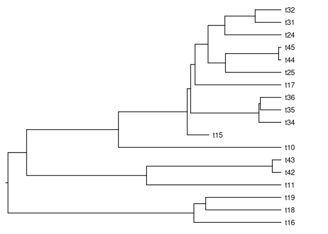